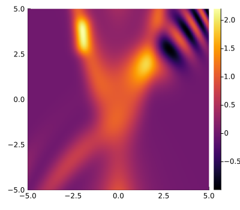
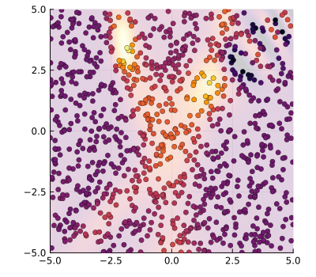
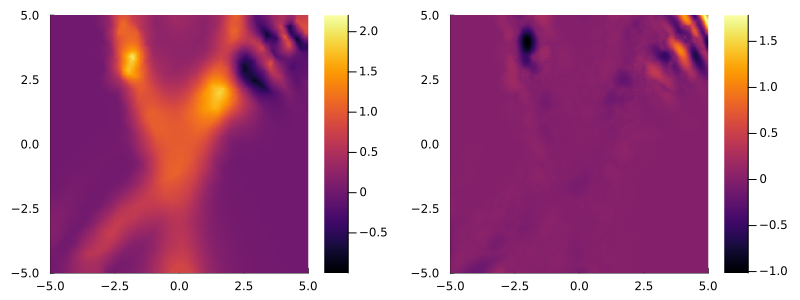
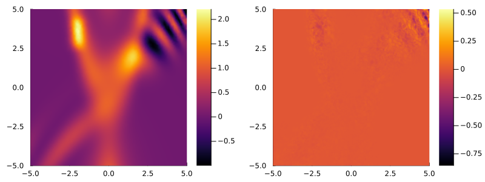
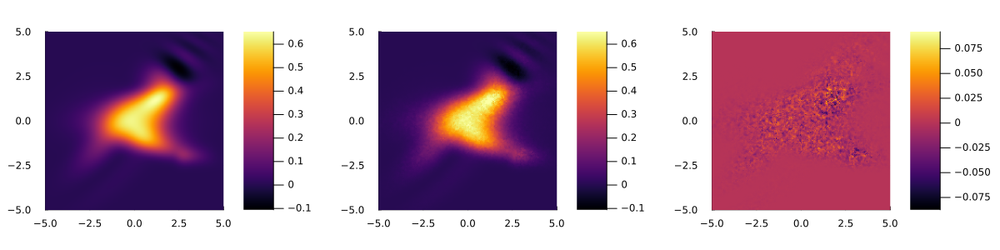

Tutorial
This tutorial demonstrates the use of the DiscreteNaturalNeighbors.jl package for the interpolation of a function from an unstructured grid in $n \geq 2$ dimensions.
2D interpolation
We first look at a 2D interpolation problem and define a function that we want to interpolate.
using Plots, DiscreteNaturalNeighbors
function f2D(x,y)
return 0.1*(y-1)^2 / ( 2 + abs(x)^2)^2 + exp(-0.2*(y-x^2)^2) + exp(-0.4*(y-x)^2) * sin(0.25*(0.2*x^2+y)^2) + 1.2*exp(-((x+2)^2)/0.2 - (y-3.5)^4)
end
xRange, yRange = -5:0.05:5, -5:0.05:5
fun_vals = [f2D(x, y) for x in xRange, y in yRange]
heatmap(xRange, yRange, transpose(fun_vals), clim=(minimum(fun_vals), maximum(fun_vals)), xlim=(-5, 5), ylim=(-5,5), aspect_ratio=:equal, size=(400, 350))
Next we generate a random sample of points on the 2D space with corresponding function values. For clarity, we also show a scatter plot of the data points along with the underlying function (semi-transparent).
NN = 1000
points = 10 .* rand(NN, 2) .- 5;
values = [f2D(row...) for row in eachrow(points)];
println("size of points: ", size(points))
println("size of values: ", size(values))
heatmap(xRange, yRange, transpose(fun_vals), clim=(minimum(fun_vals), maximum(fun_vals)),
xlim=(-5, 5), ylim=(-5,5), aspect_ratio=:equal, alpha=0.2, colorbar=false, size=(400, 350))
scatter!(points[:, 1], points[:, 2]; marker_z = values, markersize=3.5, markerstrokecolor=:black, markerstrokewidth=0.5,
clim=(minimum(fun_vals), maximum(fun_vals)), legend=false, xlim=(-5, 5), ylim=(-5,5), aspect_ratio=:equal)
Using these random samples, we then interpolate the function on a regular grid (i.e. mesh) over (xRange, yRange) by calling interpolate_dnn():
interp = interpolate_dnn(points, values, (xRange, yRange))
p1 = heatmap(xRange, yRange, transpose(interp), clim=(minimum(fun_vals), maximum(fun_vals)))
p2 = heatmap(xRange, yRange, transpose(interp - fun_vals))
plot(p1, p2, layout=(1, 2), size=(800, 300), xlim=(-5, 5), ylim=(-5,5), aspect_ratio=:equal)
The interpolation becomes more accurate for larger point sets. As the 2D interpolation is highly efficient even for large data sizes, progress is not displayed by default. A progress bar is enabled by setting the keyword argument verbose=true.
NN = 10000
points = 10 .* rand(NN, 2) .- 5;
values = [f2D(row...) for row in eachrow(points)];
xRange, yRange = -5:0.025:5, -5:0.025:5
fun_vals = [f2D(x, y) for x in xRange, y in yRange]
interp = interpolate_dnn(points, values, (xRange, yRange); verbose=true)
p1 = heatmap(xRange, yRange, transpose(interp), clim=(minimum(fun_vals), maximum(fun_vals)))
p2 = heatmap(xRange, yRange, transpose(interp - fun_vals))
plot(p1, p2, layout=(1, 2), size=(800, 300), xlim=(-5, 5), ylim=(-5,5), aspect_ratio=:equal)
3D interpolation
3D interpolations over a mesh (xRange, yRange, zRange) are obtained analogously to the 2D case. Again, we define a function to be interpolated, create random data points and use these to obtain the interpolation.
function f3D(x, y, z)
return exp(-z^2 * (1 + (0.1*x^2+0.4y^2))) * (0.1*(y-1)^2 / ( 2 + abs(x)^2)^2 + exp(-0.2*(y-x^2)^2) + exp(-0.4*(y-x)^2) * sin(0.25*(0.2*x^2+y)^2) + 1.2*exp(-((x+2)^2)/0.2 - (y-3.5)^4))
end
xRange, yRange, zRange = -5:0.05:5, -5:0.05:5, -5:0.05:5
#fun_vals = [f3D(x, y, z) for x in xRange, y in yRange, z in zRange]
NN = 1000000
points = 10 .* rand(NN, 3) .- 5;
values = [f3D(row...) for row in eachrow(points)];
interp = interpolate_dnn(points, values, (xRange, yRange, zRange));
# plot a slice of the interpolation for comparison with the original function
z_idx = 87
fun_vals = [f3D(x, y, zRange[z_idx]) for x in xRange, y in yRange]
p1 = heatmap(xRange, yRange, fun_vals, clim=(minimum(fun_vals), maximum(fun_vals)))
p2 = heatmap(xRange, yRange, interp[:, :, z_idx], clim=(minimum(fun_vals), maximum(fun_vals)))
p3 = heatmap(xRange, yRange, fun_vals - interp[:, :, z_idx])
plot(p1, p2, p3, layout=(1, 3), size=(1200, 300), xlim=(-5, 5), ylim=(-5,5), aspect_ratio=:equal)
Progress is shown for the 3D interpolation by default, and may be disabled by setting verbose=false.
$n$D interpolation
A general $n$-dimensional interpolation from a point set of size (N, n) over a mesh (Range1, Range2, ..., Rangen) is analogously calculated by calling interpolate_dnn(points, values, (Range1, Range2, ..., Rangen)).